V sekci Neměnitelnost jsme v JavaScriptu napsali funkci, která zdvojnásobila historicky nejvyšší výsledky z pravidelných šampionátů NBA.
var multiplier = 2;
var scores = [316, 320, 312, 370, 337, 318, 314];
function doubleScores(scores) {
var newScores = [];
for (var i = 0; i < scores.length; i++) {
newScores[i] = scores[i] * multiplier;
}
return newScores;
}Když jsme ji jako vstup poskytli seznam čísel, vrátila očekávaný výsledek.
> scores
[316, 320, 312, 370, 337, 318, 314]
> doubleScores(scores)
[632, 640, 624, 740, 674, 636, 628]Co se stane, když ji zadáme vstup jiného typu, jenž není seznamem čísel?
> var string = "scores"
> doubleScores(string)
[NaN, NaN, NaN, NaN, NaN, NaN]> var undefinedValue = undefined
> doubleScores(undefinedValue)
Uncaught TypeError: Cannot read property 'length' of undefined
at doubleScores (experiment.js:7)
at <anonymous>:1:1> var object = { "key" : "value" }
> doubleScores(object)
[]Vstup přijme bez ohledu na jeho typ a vrátí nečekaný výsledek. Je-li vstupem řetězec, generuje array hodnot NaN (Not-a-number). JavaScript nemá datový typ zvaný List (seznam.) Má pouze array, což je jako kombinace seznamu a arraye v Elmu.
Je-li vstupem nedefinovaná hodnota, vyvolá funkce doubleScores chybové hlášení. Je-li vstupem objekt, vrací prázdný seznam. Objekt v JavaScriptu je podobný entitě record v Elmu. Je to kolekce párů key/values.
Chceme aby naše funkce byly spolehlivé. Chceme aby odmítaly vstupy, které nepatří do množin jejich vstupů. Můžeme kolem našich funkcí osadit nějaké ochranné mříže, které nepropustí neplatné vstupy? Pojďme to zjistit. Upravme funkci doubleScores v souboru experiment.js, umístěném v adresáři beginning-elm takto:
function doubleScores(scores) {
// Reject non-list type inputs
if (Array.isArray(scores) === false) {
throw new Error("Input must be of type array");
}
var newScores = [];
for (var i = 0; i < scores.length; i++) {
newScores[i] = scores[i] * multiplier;
}
return newScores;
}Přidali jsme na samý počátek podmínku if abychom prověřili, že vstup je typu array. Není-li, vyvoláváme chybové hlášení. Nyní se podívejme, jak funkce doubleScores reaguje, když ji zadáme neplatný vstup. Otevřete v prohlížeči soubor index.html z adresáře beginning-elm a v otevřené stránce otevřete konzolu prohlížeče. Za prompt > zadávejte postupně následující příkazy a zkoumejte výstupy.
> var string = "scores"
> doubleScores(string)
Uncaught Error: Input must be of type array
at doubleScores (experiment.js:18)
at <anonymous>:1:1> var undefinedValue = undefined
> doubleScores(undefinedValue)
Uncaught Error: Input must be of type array
at doubleScores (experiment.js:18)
at <anonymous>:1:1> var object = { "key" : "value" }
> doubleScores(object)
Uncaught Error: Input must be of type array
at doubleScores (experiment.js:18)
at <anonymous>:1:1Zadané vstupy jsou soustavně odmítány s nepředpovídatelnými odůvodněními. To je však mnohem lepší, než přijmout každý vstup a získávat nepředpovídatelný výstup. Následně se pokusíme zjistit, co se stane, zadáme-li array hodnot, jež nejsou čísly.
> var undefinedArray = [undefined]
> doubleScores(undefinedArray)
[NaN]> var stringArray = ["scores"]
> doubleScores(stringArray)
[NaN]> var object = { "key" : "value" }
> doubleScores([object])
[NaN]Funkce doubleScores
připouští arraye s nečíselnými hodnotami, což je rovněž problematické. Mohli bychom instalovat nějaká svodidla, která by tomu zabránila? Zajisté. Upravte funkci doubleScores v souboru experiment.js takto:
function doubleScores(scores) {
// Reject non-list type inputs
if (Array.isArray(scores) === false) {
throw new Error("Input must be of type array");
}
var newScores = [];
for (var i = 0; i < scores.length; i++) {
// Reject arrays that contain values that are not numbers
if (typeof scores[i] !== "number") {
throw new Error("Input array must contain numbers only");
}
else {
newScores[i] = scores[i] * multiplier;
}
}
return newScores;
}Přidali jsme další podmínku if uvnitř smyčky for abychom ověřili, že každý prvek arraye je typu 'number'.
Nyní si ověřme, jak funkce doubleScores reaguje, když ji zadáme nečíselné hodnoty. Obnovte zobrazení souboru index.html v prohlížeči aby se projevily změny souboru experiment.js.
> var undefinedArray = [undefined]
> doubleScores(undefinedArray)
Uncaught Error: Input array must contain numbers only
at doubleScores (experiment.js:27)
at <anonymous>:1:1> var stringArray = ["scores"]
> doubleScores(stringArray)
Uncaught Error: Input array must contain numbers only
at doubleScores (experiment.js:27)
at <anonymous>:1:1> var object = { "key" : "value" }
> doubleScores([object])
Uncaught Error: Input array must contain numbers only
at doubleScores (experiment.js:27)
at <anonymous>:1:1Funkce doubleScores
opět soustavně odmítá arraye, které obsahují nečíselné hodnoty ale tentokrát vrací předvídatelné chyby. I když je nyní spolehlivější než dříve, musíme nejen identifikovat situace, kdy by funkce akceptovala špatné vstupy ale také přijímat opatření, jež by tyto situace marginalizovala. To může být vyčerpávající, obsahuje-li náš kód stovky funkcí jako doubleScores.
Nyní zjistíme, jak funkce doubleScores reaguje na vstupy s neplatnými typy. V adresáři beginning-elm/elm-examples bychom měli mít soubor Playground.elm.
multiplier =
2
scores =
[ 316, 320, 312, 370, 337, 318, 314 ]
doubleScores scores =
List.map (\x -> x * multiplier) scoresV tomto adresáři aktivujte elm-repl a zadejte následující příkazy:
> import Playground exposing (..)
> doubleScores "scores"
----------------------- TYPE MISMATCH ------------------------
The argument to function `doubleScores` is causing a mismatch.
4| doubleScores "scores"
^^^^^^^^
Function `doubleScores` is expecting the argument to be:
List number
But it is:
StringFunkce doubleScores je definována v modulu Playground. Proto jej musíme v replu před vlastním voláním funkce importovat.
Dovídáme se, že jako argument je očekáván seznam s číselnými hodnotami. Co když zadáme seznam s nečíselnými hodnotami?
> doubleScores [ "scores" ]
----------------------- TYPE MISMATCH -------------------------
The argument to function `doubleScores` is causing a mismatch.
4| doubleScores [ "scores" ]
^^^^^^^^^^^^
Function `doubleScores` is expecting the argument to be:
List number
But it is:
List StringBudeme stále odmítáni, dokud nezadáme seznam s čísly.
> doubleScores [ 316, 320, 312, 370, 337, 318, 314 ]
[632,640,624,740,674,636,628]Nakonec jsme žádná svodidla, jež by přiměla funkci doubleScores odmítat vstupy s neplatnými typy, instalovat nemuseli. To proto, že Elm disponuje účinným systémem typů, který automaticky vyvolá chybové hlášení, kdykoli se vstup neshoduje přesně s očekávaným typem vstupu funkce. Typový systém Elmu nám umožňuje soustředit se na řešení problému bez starostí o to, jak se náš kód zachová při zadání neplatného vstupu. Funkce v Elmu jsou také stručnější v důsledku nepřítomnosti kódu, ověřujícího typ vstupních hodnot.
Zbytek této sekce se podrobně zabývá systémem typů v Elmu.
Typy hodnot
Typ je kolekce hodnot, majících podobné vlastnosti. Na příklad, typ Int reprezentuje celá čísla: -1, 0, 1, 2 etc. Typ Bool reprezentuje logické hodnoty True a False.
Zadáme-li hodnotu v replu, dozvíme se její typ:
> 1
1 : number
> 2.5
2.5 : Float
> True
True : Bool
> "dudeism"
"dudeism" : String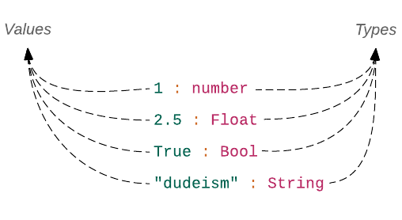
Dvojtečka : zde odděluje hodnotu od jejího typu. Lze ji číst jako: "je typu".
Když jsem zapsali číslo 1, vytiskl repl jeho typ jako number, což je označení číselného typu. Konkretním typem může být typ Int nebo Float, podle způsobu použití:
> x = 1
1 : number
> 5.3 + x
6.3 : Float
> 5 + x
6 : numberPřičteme-li 1 k 5.3 dostaneme Float. Přičteme-li 1 k 5, stále dostáváme number, protože výsledek 6 může být považován buď za Int nebo za Float podle použití. Zde je příklad, kdy x skončí jako typ Int:
> x + (String.length "Duder")
6 : IntVýraz String.length "Duder" vrací hodnotu typu Int. Sečteme-li tedy x s výsledkem tohoto výrazu, je výsledný součet rovněž typu Int.
Výrazy jsou rovněž nositelé typu
Protože se všechny výrazy v Elmu při vyhodnocení redukují na hodnoty, jsou rovněž nositeli typu.
> "The church of " ++ "the latter-day dude"
"The church of the latter-day dude" : StringVýraz "The church of " ++ "the latter-day dude" spojuje dva řetězce. Jeho typ je dán typem výsledné hodnoty.
Až dosud se v příkladech pro repl vynechávalo označení typu výrazů. Nyní, když víme, co typ znamená, se toto označení bude uvádět.
Typ List.
Ukažme si, co dostaneme, když zadáme seznam (list):
> [ 1.0, 2.0, 3.0 ]
[1,2,3] : List Float
> [ "Jackie", "Treehorn", "Bunny"]
["Jackie","Treehorn","Bunny"] : List StringDostáváme slovo List následované typem hodnot, které seznam obsahuje. A což prázdný seznam?
> []
[] : List aMísto konkretního typu dostáváme označení a, což znamená, že se typ může měnit v závislosti na použití prázdného seznamu.
> 1.5 :: []
[1.5] : List Float
> "Maude" :: []
["Maude"] : List StringPřidáme-li float, typ seznamu je List Float, přidáme-li řetězec, typ seznamu je List String. Všechny názvy konkretních typů začínají velkým písmenem. Písmeno a tudíž není považováno za název typu. Je to typová proměnná, což znamená, že může být jakéhokoli typu. Písmeno a samo o sobě nemá žádný význam.
Jeho místo bude nahrazeno konkrétním typem po vyhodnocení výrazu.
Každé jméno, které začíná malým písmenem, může být proměnnou typu. Na příklad value, placeholder, walter, uli jsou všechno platné názvy proměnné typu. Elm používá písmeno a kvůli stručnosti. Když jsme v replu zapsali číslo 1,
vrátilo se označení number, což je specielní typ proměnné. Můžeme ji použít pro prezentaci buď typu Int nebo Float. V Elmu je velice málo specielních proměnných typu jako je number.
Typ Array
> import Array
> Array.fromList [ 1, 2, 3 ]
Array.fromList [1,2,3] : Array.Array number
> Array.fromList [ "You", "Human", "Paraquat" ]
Array.fromList ["You","Human","Paraquat"] : Array.Array StringPodobně jako u typu List je typ arraye Array.Array následovaný typem hodnot, které array obsahuje. Typy, které nejsou automaticky načteny do replu, jsou předznamenány názvem modulu, ve kterém jsou tyto typy uloženy. Protože jsou typy Int, Float, Stringa List do replu automaticky načteny, nejsou prefixovány názvem modulu.
Typ Tuple
> ( 5, "sic" )
(5,"sic") : ( number, String )Elm nemá pro entici (tuple) samostatné označení jako je List nebo Array. Proto repl vypisuje pouze typy jeho jednotlivých prvků ( number, String ). Označení number je rovněž speciální proměnnou typu. Pokud proměnná typu začíná slovem number a končí konkretním číslem, má v Elmu speciální význam:
> ( 1, 2, 3, 4, 5, 6, 7, 8, 9 )
(1,2,3,4,5,6,7,8,9)
: ( number
, number1
, number2
, number3
, number4
, number5
, number6
, number7
, number8
)Mimochodem, entice v Elmu mohou mít maximálně devět prvků. Při překročení tohoto počtu dostaneme chybové hlášení. Obecně vzato, pro uložení více než tří hodnot různého typu je lepší použít kolektor record(záznam). Elm povoluje víc než tři hodnoty v entici, protože se vzácně mohou vyskytnout případy, kdy uložení více než tří různých hodnot je výhodnější v entici než v záznamu.
Mohli bychom se ptát, proč se typ pro ( 1, 2 ) zobrazí jako (number, number1) a ne (number, number). Konec konců, číslice 1 a 2 jsou obě stejného typu: number. Připomeňme si, že v Elmu jsou dva typy čísel: Float a Int. Protože typové označení (number, number) používá tutéž proměnnou, mohlo by to znamenat, že naše entice by musela mít dvě hodnoty téhož typu - buď dvakrát Int nebo dvakrát Float. Označením typu pomocí dvou proměnných (number, number1) nám dává Elm možnost mít jednu hodnotu typu Float a jednu typu Int, pokud bychom si to přáli. Existují čtyři možné sady hodnot, které může entice s typovým označením (number, number1) obsahovat:
> ( 1, 2 )
(1,2) : ( number, number1 )
> ( 1, 2.0 )
(1,2) : ( number, Float )
> ( 1.0, 2 )
(1,2) : ( Float, number )
> ( 1.0, 2.0 )
(1,2) : ( Float, Float )Připomeňme si, že číslice 1 a 2 mohou být považovány buď za Int nebo za Float v závislosti na jejich použití. Proto nevidíme typové označení číslic (1, 2.0) jako (Int, Float). Použitím typů (number, Float) zachovává Elm možnost budoucího použítí čísla 1 buď jako Int nebo jako Float.
Takto vypadá typové označení entice, obsahující dva řetězce:
> ( "Bunny", "Uli" )
("Bunny","Uli") : ( String, String )Aby byly entice Elmu stejného typu, musí obsahovat stejný počet hodnot stejného typu. Entice ( 1, 2 ) a ( 1, 2, 3 ) jsou různého typu. Stejně tak ( 1, 2 ) a ( "Bunny", "Uli" ).
Tudíž, pokusíme-li se vložit dvě entice různých délek se stejnými typy hodnot do seznamu, obdržíme chybové hlášení.
> [ ( 1, 2 ), ( 3, 4, 5 ) ]
-------------------------- TYPE MISMATCH --------------------------
The 1st and 2nd entries in this list are different types of values.
3| [ ( 1, 2 ), ( 3, 4, 5 ) ]
^^^^^^^^^^^
The 1st entry has this type:
( number, number1 )
But the 2nd is:
( number, number1, number2 )Typ Record
> { name = "The Big Lebowski", releaseYear = 1998 }
{ name = "The Big Lebowski", releaseYear = 1998 }
: { name : String, releaseYear : number }Stejně jako u entice, nemá Elm rovněž typové jméno pro záznam (record). Proto jej repl opisuje výpisem { name : String, releaseYear : number }, v němž se konstatuje, že hodnota u popisku name je typu String a hodnota u popisku releaseYear je typu number. Jak jsme si říkali v sekci Record, můžeme pro pojmenování existujícího záznamu použít alias typu:
> type alias Movie = { name : String, releaseYear : Int }Sousloví type alias přidává jméno existujícímu typu. Movie není nový typ. Je to nově přiřazené jméno (alias) k typovému opisu záznamu { name : String, releaseYear : Int }. Později si ukážeme, jak definovat své vlastní typy. Sousloví type alias rovněž vytváří funkci pro tvorbu záznamů (records) za kulisami. Tuto konstruktorovou funkci můžeme použit k vytvoření záznamu takto:
> Movie "The Big Lebowski" 1998
{ name = "The Big Lebowski", releaseYear = 1998 } : Repl.MoviePokud si nepamatujete, jak konstruktorová funkce pracuje, v sekci Record naleznete pěkné ilustrativní zobrazení.
Nyní má typ označení Repl.Movie místo popisu { name : String, releaseYear : Int }. Všechny aliasy typu a uživatelské typy, definované uvnitř replu, jsou prefixovány slovem Repl - což je název modulu, reprezentujícího repl samotný.
Typ Function
Funkce rovněž deklarují své typové vybavení.
> addOne x = x + 1
<function> : number -> numberDefinovali jsme funkci addOne, která přijímá jeden argument typu number a rovněž vrací hodnotu typu number. Její typ je tedy popsán jako number -> number.

Zapisujeme-li definici funkce do souboru, je vhodné rovněž uvádět popis jejího typu. Přidejte následující definici funkce hned nad funkci main v souboru Playground.elm.
addOne : number -> number
addOne x =
x + 1
main =
...
Typy parametru a výstupní hodnoty jsou odděleny šipkou ->. Typovou anotaci jsme dosud u žádné funkce neprováděli. Jak mohl Elm správně určit typy parametrů a výstupních hodot bez anotace typu funkce? Proto, že umí odvozovat (infer) typy podle operací, které se uvnitř funkce provádějí. Ve funkci addOne jsme použili operátor +, který jako funkce má následující anotaci:
> (+)
<function> : number -> number -> numberPřijímá dvě hodnoty typu number a vrací hodnotu typu number. Parametr x ve funkci addOne musí byt typu number aby byly uspokojeny typové požadavky operátoru+. Tato automatická dedukce typů je známa jako inference typu. Tuto inferenci Elm při vyhodnocování našeho kódu extenzivně používá, takže my nemusíme typ každičké hodnoty deklarovat.
Podívejte se na několik příkladů inference typu v replu:
> divideByTwo x = x / 2
<function> : Float -> Float
> divideByTwo x = x // 2
<function> : Int -> IntKdyž použijeme operátor prostého (floating-point) dělení (/), je typ funkce divideByTwo vydedukován jako Float -> Float, když ale použijeme operátor celočíselného dělení (//), který odsekává vše za desetinnou čárkou, má inference tvar Int -> Int.
Doposud jsme posuzovali funkce, které používají pouze jeden operátor. Napišme poněkud složitější funkci a pátrejme zda bude Elm rovněž schopen inferovat její typ. Přidejte následující definici funkce hned nad funkci main v souboru Playground.elm.
guardiansWithShortNames guardians =
guardians
|> List.map String.length
|> List.filter (\x -> x < 6)
|> List.length
main =
...Anotaci typu funkce guardiansWithShortNames jsme neprovedli, protože chceme aby to za nás provedl Elm. Pohleďme, co nám ukáže repl:
> guardiansWithShortNames
<function> : List String -> IntPrvní operace, kterou aplikujeme na parametr guardians pomáhá Elmu určit jeho typ. Aby mohla funkce List.map aplikovat funkci String.length na každý element v seznamu, musejí být tyto prvky typu String. Proto vidíme anotaci List String jako typ parametru guardians. Podobným způsobem určí Elm typ vratné hodnoty funkce podle poslední provedené operace. V prezentovaném příkadě to je funkce List.length, která vrací hodnotu typu Int.
> List.length
<function> : List a -> IntProto Elm dedukuje, že funkce guardiansWithShortNames rovněž vrací hodnotu typu Int. Když Elm provádí automatickou inferenci typů, proč potřebujeme psát anotaci typu nad každou deklaraci funkce? Z těchto dobrých důvodů:
- Anotace je zároveň dokumentací funkce
- Umožňuje ověření kódu
- Limituje typy hodnot, které může funkce přijmout
Dokumentace funkce
Pro člověka je často obtížné odvodit typy parametrů a vratné hodnoty pouze ze zápisu funkce. Tento problém lze také řešit přidáním komentáře nad každou funkci:
{- Takes a list of strings and
returns an integer value
-}
guardiansWithShortNames guardians =
guardians
|> List.map String.length
|> List.filter (\x -> x < 6)
|> List.lengthTyto statické komentáře jsou pouze tak dobré, jak dobrá je schopnost jejich autora dobře formulovat. Mohou také ztratit smysl, když se někdo rozhodne změnit funkci a zapomene změnit komentář. Lepší alternativou je použití anotace typu, která nikdy neztratí smysl, protože pokud se kód neshoduje s anotací typu, vyvolá kompilátor Elmu chybové hlášení.
Přidejte následující anotaci hned nad definici funkce guardiansWithShortNames v souboru Playground.elm
guardiansWithShortNames : List String -> IntOvěření kódu
Elm nám může pomoci při hledání chyb v našem kódu porovnáním anotace typu se skutečným kódem. Řekněme, že chceme napsat funkci,která sčítá dvě čísla. Po jistém experimentování jsme došli k závěru, že anotací typu funkce by mohl být zápis:
add : number -> number -> numberPřidejte následující definici funkce hned nad funkci main v souboru Playground.elm.
add : number -> number -> number
add x y =
x ++ y
main =
...Funkci s názvem add jsme definovali již v sekci Functions. Pokud tuto definici máte stále v souboru Playground.elm, směle ji smažte. Jinak dostaneme chybu duplikátní definice.
Když zkusíme evokovat funkci add v replu, dostaneme následující chybové sdělení.
> add 1 2
====================== ERRORS ========================
------------------- TYPE MISMATCH --------------------
The left argument of (++) is causing a type mismatch.
330| x ++ y
^
(++) is expecting the left argument to be a:
appendable
But the left argument is:
number
Hint: Only strings, text, and lists are appendable.V anotaci typu jsme deklarovali, že funkce add přijímá dva číselné argumenty, ale náš kód očekává, že naše argumenty jsou appendable (připojítelné). Označení appendable je proměnná typu, která může reprezentovat seznam, řetězec nebo text, což jsou jediné typy, které může Elm spojovat dohromady s použitím operátoru ++. Omylem jsme zapsali ++ místo +. Kdybychom nepřipojili anotaci typu, Elm by spokojeně akceptoval definici funkce add a odvodil by si její anotaci ve tvaru:
add : appendable -> appendable -> appendableCož není to, co chceme. Bez váhání zaměňte ++ za + v definici funkce add aby se její implementace shodovala s anotací jejího typu.
add : number -> number -> number
add x y =
x + yOmezení akceptovaných typů hodnot
Řekněme že chceme aby naše funkce add přijímala pouze celočíselné hodnoty. Upravte její anotaci v souboru Playground.elm takto:
add : Int -> Int -> IntKdyž se nyní pokusíme sečíst dvě desetinná (float) čísla, vyvolá kompilátor chybové hlášení:
> add 1.5 2.3
-------------------- TYPE MISMATCH ----------------------
The 1st argument to function `add` is causing a mismatch.
4| add 1.5 2.3
^^^
Function `add` is expecting the 1st argument to be:
Int
But it is:
Float
Hint: Elm does not automatically convert between Ints and
Floats. Use `toFloat` and `round` to do specific conversions.
<http://package.elm-lang.org/packages/elm-lang/core/latest/Basics#toFloat>Bez anotace typu bychom nebyli schopni omezit argumenty na hodnoty typu Int.
Anotace typu s více parametry
Anotace typu pro funkci s více paramtery může být na první pohled matoucí.
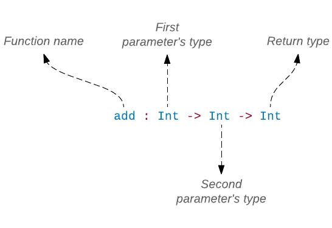
Typ návratové hodnoty je od parametrů oddělen šipkou ->. Parametry samotné jsou rovněž oddělený šipkou ->. Nemáme žádné vizuální vodítko pro určení, kde parametry končí a kde začíná typ návratové hodnoty. Abychom pochopili, proč anotace typu používá řadu šipek, potřebujeme nejprve pochopit princip práce funkce v Elmu.
V sekci Částečná aplikace funkce jsme se dozvěděli, že když nedodáme normální fukci dostatečný počet argumentů, dostáváme místo chybového hlášení částečně aplikovanou funkci.
> add 1 2
3 : Int
> add 1
<function> : Int -> IntZadáme-li fukci add pouze první argument, vrací funkci, která za scénou vypadá nějak takto:
addPartiallyApplied : Int -> Int
addPartiallyApplied y =
1 + yParametr x byl nahrazen hodnotou 1 a nyní se očekává, že zadáme druhý argument. Přiřaďme nejprve částečně aplikovanou funkci konstantě:
> addPartiallyApplied = add 1
<function> : Int -> IntNyní můžeme aplikovat addPartiallyApplied na hodnotu 2 a dostaneme konečný výsledek.
> addPartiallyApplied 2
3 : IntZpočátku vypadala funkce add jako funkce, která přijímá dva argumenty a vrací hodnotu typu Int, avšak po pečlivém zkoumání jsme zjistili, že funkce ve skutečnosti přijala pouze jeden argument a vracela částečně aplikovanou funkci. Všechny funkce v Elmu pracují tímto způsobem bez ohledu na to, kolik argumentů se zdají přijímat. S touto nově nalezenou znalostí můžeme přepsat anotaci funkce add takto:
add : Int -> (Int -> Int)
Protože závorky naznačují funkci, můžeme každou jednotlivou funkci vložit do vlastních závorek:
add : (Int -> (Int -> Int))Ovšem, všechny tyto závorky jsou v Elmu nepovinné, takže anotace typu lze zapsat mnohem čistěji. V našem případě takto:
add : Int -> Int -> IntTento proces přeměny funkce s více argumenty na posloupnost funkcí s jedním argumentem se nazývá currying. To je ta technika, která nám umožňuje používat směrníkový operátor |>. Zde je příklad, který jsme viděli v sekci Function:

Nyní když víme, co je anotace typu, budeme ji přidávat ke všem funkcím, které budeme při výkladu vkládat do zdrojového souboru.
Cvičení 4.6.1
Vraťte se k souboru Playground.elm a přidejte anotace typu ke všem funkcím. Potom je všechny prověřte v replu. Napříkad pro operátor ++:
> add 2 4V replu můžete vidět obšírný výpis typových prohřešků. Můžete si také všimnout, že Elm očekává několik typů hodnot, o kterých jsme dosud nehovořili, jako Order a Html.Html.msg. Půvabné na Elmu je to, že i když vám říká jaký přesně typ hodnoty očekává, můžete dokončit cvičení i když nejste se všemi typy obeznámeni.
Vytvoření vlastního typu
Dosud jsme používali pouze typy, poskytované Elmem ale někdy nejsou tyto typy pro námi zamýšlené účely postačující. V Elmu máme možnost si vytvořit typy vlastní. Viz příklad:
> type Greeting = HowdyDefinovali jsme nový typ, nazvaný Greeting. Tento typ má jedinou možnou hodnotu: Howdy.
Stejně jako u vestavěných typů, musí i jména uživatelských typů začínat velkým písmenem.
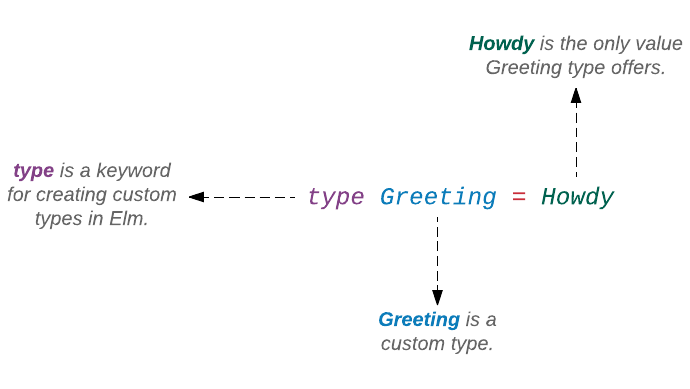
Podívejme se, co dostaneme, když v replu zapíšeme Howdy.
> Howdy
Howdy : Repl.GreetingDle očekávání, typ je veden jako Greeting. Co se stane, když zapíšeme slovo Greeting samotné?
> Greeting
-------- NAMING ERROR ---------
Cannot find variable `Greeting`
4| Greeting
^^^^^^^^Dostali jsme 'naming error' (chybu pojmenování). Stejnou chybu dostaneme při zápisu jiného typu z Elmu.
> String
-------- NAMING ERROR -------
Cannot find variable `String`
4| String
^^^^^^Jak se ukazuje, nemá velký smysl zapisovat názvy typů do replu. Je to proto, že se od nás očekává zadání platného výrazu.
As it turns out, it doesn’t make sense to input a type into the repl. That’s because we’re supposed to enter a valid expression. Howdy, 1 a "Walter" jsou hodoty a všechny hodnoty jsou platnými výrazy. Proto se nám při jejich zápisu do replu nevrací chybové hlášení. Na druhé straně, slova jako Greeting, Int a String jsou jména, která reprezentují kategorie hodnot, nikoliv hodnoty samé.
Uživatelské typy nejsou omezeny pouze na jednu hodnotu. Můžeme jich zadat kolik chceme. Rozšiřme typ Greeting o další hodnotu.
> type Greeting = Howdy | Hola
Nyní má Greeting dvě možné hodnoty: Howdy a Hola.
> Howdy
Howdy : Repl.Greeting
> Hola
Hola : Repl.GreetingDefinice typu Greetingje podobná definici vestavěného typu Bool:
type Bool = False | TruePoužítí uživatelských typů
Pojďme se podívat, jak můžeme použít typ Greeting v našem kódu. Následující kód přidejte hned nad funkci main v souboru Playground.elm, umístěném v adresáři beginning-elm/elm-examples.
type Greeting
= Howdy
| Hola
sayHello : Greeting -> String
sayHello greeting =
case greeting of
Howdy ->
"How y'all doin'?"
Hola ->
"Hola amigo!"Uživatelský typ se často užívá s výrazem case pro nalezení shody mezi vzorem (pattern match) a hodnotou typu. Při nalezení shody se vyhodnotí příslušný výraz. Na používání uživatelského typu není nic speciálního. Nativní typ Elmu Bool může být rovněž používán podobným způsobem.
welcomeMessage : Bool -> String
welcomeMessage isLoggedIn =
case isLoggedIn of
True ->
"Welcome to my awesome site!"
False ->
"Please log in."Funkce sayHello přijímá jeden argument typu Greeting. Je-li hodnotou Howdy, dojde k opravdové Texanské interakci. Je-li hodnotou Hola, vrací funkce "Nazdar příteli!" španělsky. Importujme funkci sayHello do replu a použijme ji k pozdravení cizince:
> import Playground exposing (..)
> sayHello Howdy
"How y'all doin'?" : String
> sayHello Hola
"Hola amigo!" : StringZobrazí-li se vám následující chyba, restartuje seanci elm-repl. Typ Greeting jsme definovali nejprve v replu. Později, když jsme jej definovali také v souboru Playground.elm, přijímá repl matoucí instrukce - odtud chybové hlášení.
------------------- TYPE MISMATCH -------------------------
The argument to function `sayHello` is causing a mismatch.
6| sayHello Howdy
^^^^^
Function `sayHello` is expecting the argument to be:
Playground.Greeting
But it is:
Repl.GreetingPři psaní kódu do souboru je vhodné zalamovat definici uživatelského typu tak, že každá hodnota je uvedena na vlastním řádku. Do této konfigurace si beztak elm-format přeformátuje náš zápis do souboru ve tvaru type Greeting = Howdy | Hola:
type Greeting
= Howdy
| HolaNaproti tomu při zapisování kódu do replu není zalamování textu do jednotlivých řádků až tak výhodné, protože se konec řádku musí explicitně označovat zpětným lomítkem, což je práce navíc.
Rozdíl mezi type a type alias
Je důležité zdůraznit, že type a type alias jsou dva různé koncepty. Procedura type vytváří nový typ, zatímco type alias dává jméno existujícímu typu. Příklad pro type alias jsme již viděli výše. Zde jej uvádíme znovu:
> type alias Movie = { name : String, releaseYear : Int }Přiřadili jsme Movie jako jméno k typu { name : String, releaseYear : Int } abychom mohli stručným způsobem vytvořit záznam o filmu:
> Movie "The Big Lebowski" 1998
{ name = "The Big Lebowski", releaseYear = 1998 } : Repl.MovieZde je jiný příklad z modulu Time:
type alias Time =
FloatRůzné funkce v modulu Time akceptují čas jako desetinné číslo. Aby bylo jasnější, že tyto funkce přijímají časový údaj jako vstup, byl vytvořen alias Time. Aliasy typu nám usnadňují psaní stručných kódů.
Řekněme, že chceme napsat funkci, která nám sdělí, zda byl nějaký film uveden do kin f roce 2016, či nikoli:
releasedIn2016 : Movie -> Bool
releasedIn2016 movie =
movie.releaseYear == 2016Kdybychom nevytvořili alias typu Movie, anotace typu by vypadala takto:
releasedIn2016 : { name : String, releaseYear : Int } -> Bool
releasedIn2016 movie =
movie.releaseYear == 2016Je obtížné podle anotace typu poznat, jakou informaci funkce releasedIn2016 očekává. Použijeme-li však alias typu, umíme říci, že očekává záznam Movie. Jak se naše aplikace rozrůstá, mají naše datové struktury tendenci být stále složitější. S pojmenováním těchto datových struktur můžeme psát kód mnohem přehlednější, bez ztráty všech výhod, plynoucích z typového systému.
Uživatelské typy s payloadem
Elm usnadňuje popisování složitých datových stuktur také tím, že nám umožňuje přidávat užitný obsah (payload) k hodnotám v uživatelském typu. Abychom pochopili, co to je payload, přidáme nějaké další možnosti do našeho uživatelského typu. Upravte typ Greeting a funkci sayHello v souboru Playground.elm takto:
type Greeting
= Howdy
| Hola
| Namaste String
| NumericalHi Int Int
sayHello : Greeting -> String
sayHello greeting =
case greeting of
Howdy ->
"How y'all doin'?"
Hola ->
"Hola amigo!"
Namaste message ->
message
NumericalHi value1 value2 ->
value1 + value2 |> toStringPřidali jsme dvě další možnosti pro vytvoření hodnoty typu Greeting. Položka Namaste nám umožňuje pozdravit v nepálštině a NumericalHi nám umožní pozdravit matematiky. Na rozdíl od Howdy a Hola, Namaste a NumericalHi nejsou hodnotami. Pouze poskytují možnost vytvoření hodnot (či dat). Proto se jim také říká datové konstruktory. Podívejme se co dostaneme, když je zapíšeme do replu:
> Namaste
<function> : String -> Playground.Greeting
> NumericalHi
<function> : Int -> Int -> Playground.GreetingApropos, datové konstruktory jsou vlastně funkce za scénou. Přijímají payload jako argument a vytvářejí hodnoty typu Greeting. V případě Namaste je payload tvořen řetězcem ale payload pro NumericalHi zahrnuje dvě hodnoty typu Int. Počet dat a typů v payloadu není omezen.
Namaste a NumericalHi jsou jako funkce tím, že musejí být aplikovány na argumenty uvnitř svých payloadů aby vytvořily konkretní hodnoty.
> Namaste "Tapailai kasto cha?"
Namaste "Tapailai kasto cha?" : Playground.Greeting
> NumericalHi 1 4
NumericalHi 1 4 : Playground.Greeting"Tapailai kasto cha?" znamená "Jak se máš?" v nepálštině.
Je důležité mít na vědomí, že se datové konstruktory nechovají jako normální funkce, pokud se týče provádění operací na datech. Jsou to spíše krabičky, do nichž data ukládáme. Proto také, když do replu napíšeme NumericalHi 1 4, vrátí nám totéž zpět. Celý tento výraz NumericalHi 1 4 je považován za hodnotu typu Greeting.
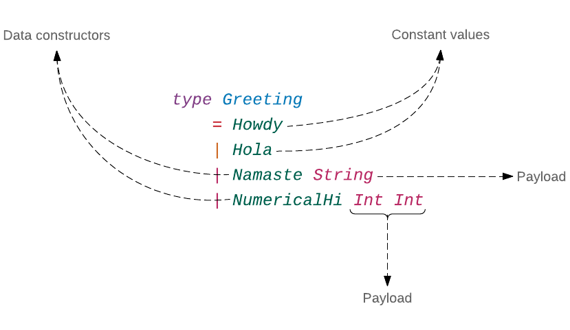
Protože Howdy a Hola žádný payload nepřijímají, nemusejí být jejich hodnoty konstruovány. Jejich hodnoty jsou již ustanoveny, což z nich vpodstatě činí konstanty. Proto nám je repl neprezentuje jako funkce.
> Howdy
Howdy : Playground.Greeting
> Hola
Hola : Playground.GreetingZpůsob, kterým jsme použili Namaste a NumericalHi ve funkci sayHello, je velmi podobný použití Howdy a Hola. Jediný rozdíl je ten, že jsme použili argumenty v payloadu k vytvoření příslušných odpovědí.
I když se Howdy a Hola chovají jako konstanty, jsou někdy označovány jako nulární datové konstruktory. Nulární konstruktor je konstruktor, který nepřijímá žádné argumenty.
Sdružený typ
Uživatelský typ Greeting, který jsme v předchozí části vytvořili, má v Elmu své označení, nazývá se sdružený (union) typ. Všechny uživatelské typy, vytvořené s použitím klíčového slova type, se nazývají sdružené typy. Také se jim někdy říká tagged unions nebo algebraické datové typy (ADTs).
Termín union (sjednocení, sdružení) je odvozen z teorie množin - odvětví matematiky, zabývající se kolekcemi jasně odlišených objektů, neboli množin. Množina může obsahovat cokoliv si můžeme představit: čísla, lidi, auta, filmy, národy, barvy, atd. Mějme dvě číselné množiny:
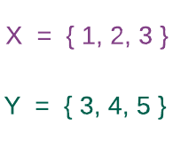
Sjednocení (union) těchto dvou množin vypadá nějak takto:
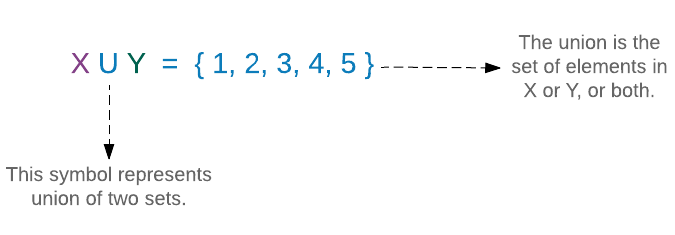
Všimněte si, že sjednocení obsahuje pouze jednu 3 a nikoliv dvě. Každý prvek ve sjednocené množině musí být unikátní. Jiný způsob zobrazení sjednocení dvou množin je pomocí Vennova diagramu:
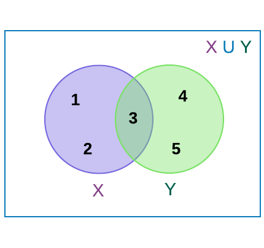
Nemají-li dvě množiny žádné prvky společné, nazývají se disjointní (nesouvisející) množiny a jejich spojení (union) se nazývá disjointní sjednocení (disjoint union).
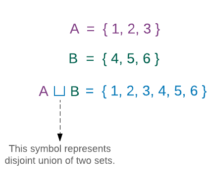
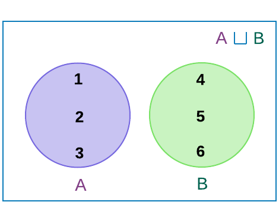
V disjointním sjednocení je vždy možné určit, odkud jednotlivý element pochází. Například můžeme říci, že 2 pochází z množiny A s 4 z množiny B. Mají-li dvě množiny některé elementy společné, je vždy možné z nich vytvořit disjointní sjednocení tím, že se elementy v obou množinách různě označí.
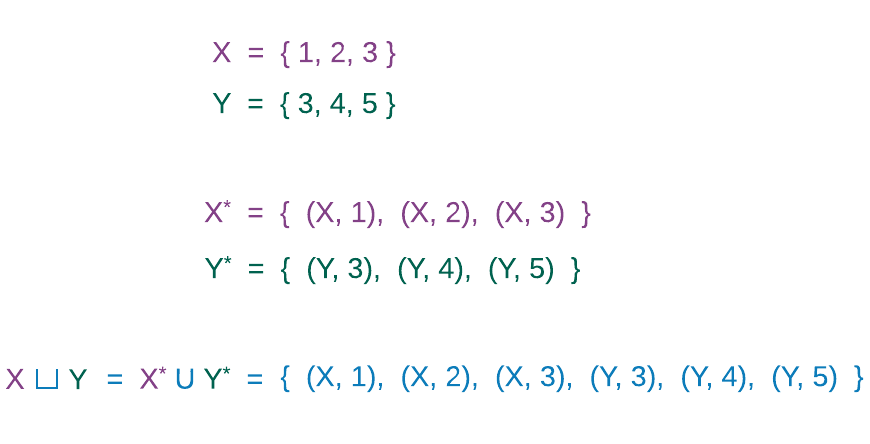
Množiny X a Y nejsou disjointní, protože mají společný prvek 3.
Abychom vytvořili disjointní sjednocení, musíme nejprve přeměnit množiny X a Y na disjointní množiny označením každého jejich prvku. Označení (tagging) z nich dělá množiny disjointní, protože písmeno X je odlišné od písmene Y, byť číslo 3 je v obou případech stejné. X* a Y* jsou disjointní množiny, které obsahují označené (tagged) elementy množin X a Y.
Sdružený typ v Elmu se podobá disjointnímu sjednocení množin označených prvků. Napříkad, typ Greeting lze chápat jako disjointní sjednocení čtyř množin:
- Množina, obsahující
Howdyjako svůj jediný element. - Množina, obsahující
Holajako svůj jediný element. - Množina, obsahujicí nekonečný počet řetězců, označených slovem
Namaste. - Množina, obsahující nekonečný počet dvojic typu
Int, označených slovemNumericalHi.
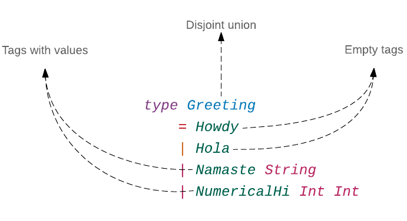
Třetí množina, obsahující elementy s označením Namaste, vypadá takto:
{ (Namaste "a"), (Namaste "b"), (Namaste "aaramai?"), ... }Celkový počet elementů v této množině je roven celkovému počtu jedinečných řetězců, jež můžeme v Elmu vytvořit - jenž je nekonečný. Podobně vypadá čtvrtá množina, obsahující elementy, označené slovem NumericalHi:
{ (NumericalHi 0 0), (NumericalHi 0 1), (Numerical 0 2), ... }Celkový počet elementů v této množině je roven dvojnásobku počtu hodnot typu Int, jež můžeme vytvořit v Elmu, což je velmi velké číslo. Typ Greeting reprezentuje každičký element ve všech čtyřech výše uvedených množinách.
Nyní tedy již víte, proč se uživatelské typy v Elmu nazývají sdružené typy.
Duplikátní tagy
Každé označení (tag) v typu musí být unikátní. Přidejte duplikátní tag k typu Greeting v souboru Playground.elm takto:
type Greeting
= Howdy
| Hola
| Namaste String
| NumericalHi Int Int
| NumericalHi Int Int IntNyní zkuste zapsat NumericalHi v replu.
> NumericalHi
------------------- DUPLICATE DEFINITION -------------------
Naming multiple top-level values `NumericalHi` makes things
ambiguous. When you say `NumericalHi` which one do you want?
228|>type Greeting
229|> = Howdy
230|> | Hola
231|> | Namaste String
232|> | NumericalHi Int Int
233|> | NumericalHi Int Int Int
Find all the top-level values named `NumericalHi` and do some
renaming. Make sure the names are distinct!Jak můžete vidět, je Elm duplikátní definicí zmaten, protože označení NumericalHi je vlastně funkce za scénou a my nemůžeme mít dvě funkce stejného jména v témže jmenném prostoru (scope). Elm nám také brání vytvořit dvě různé hodnoty se stejným tagem v témže scopu. Odeberte duplikátní označení NumericalHi z typu Greeting a definujte nový typ, zvaný Salutation hned nad typem Greeting v souboru Playground.elm.
type Salutation
= Aloha
| HowdyNový typ Salutation rovněž obsahuje Howdy jako jednu ze svých označení. Zkusme zapsat Howdy do replu.
> Howdy
---------------- DUPLICATE DEFINITION -----------------
Naming multiple top-level values `Howdy` makes things
ambiguous. When you say `Howdy` which one do you want?
228|>type Salutation
229|> = Aloha
230|> | Howdy
Find all the top-level values named `Howdy` and do some
renaming. Make sure the names are distinct!Elm je opět zmaten. Odeberte definici typu Salutation ze souboru Playground.elm. Jednou z velkých výhod používání sdružených typů v Elmu je to, že nás kompilátor donutí zabývat se všemi případy procedury case. Například, když ve funkci sayHello vypustíme byť jen jeden případ z typu Greeting, kompilátor si bude stěžovat. Odeberte kód pro hodnotu NumericalHi z funkce sayHello v souboru Playground.elm.
sayHello : Greeting -> String
sayHello greeting =
case greeting of
Howdy ->
"How y'all doin'?"
Hola ->
"Muy bien, gracias."
Namaste message ->
messageKdyž nyní v replu zadáme funkci sayHello, dostaneme následující chybové hlášení:
> sayHello
======================= ERRORS ===========================
------------------ MISSING PATTERNS ----------------------
This `case` does not have branches for all possibilities.
236|> case greeting of
237|> Howdy ->
238|> "How y'all doin'?"
239|>
240|> Hola ->
241|> "Muy bien, gracias."
242|>
243|> Namaste message ->
244|> message
You need to account for the following values:
Playground.NumericalHi _ _
Add a branch to cover this pattern!Kompilátor Elmu je jako přátelský pomocník, který nás jemně informuje, když uděláme chybu. Vděčíme za to mocnému typovému systému v Elmu, jenž činí jeho kompilátor tak bystrým. Vraťte se do zdrojového souboru a vraťte kód pro hodnotu NumericalHi zpět do funkce sayHello.
NumericalHi value1 value2 ->
value1 + value2 |> toStringTypový konstruktor
V sekci Ripple-Carry Adder jsme se setkai s touto definicí:
type Maybe a
= Just a
| NothingMaybe je vestavěný typ Elmu, který nám umožňuje vyjádřit koncept chybějící hodnoty. Často si nejsme jisti zda hodnota, po které se pídíme, skutečně existuje. Snažíme-li se například vyjmout desátý prvek z arraye, který má jenom pět elementů, dostaneme Nothing.
> import Array
> myArray = Array.fromList [ 0, 1, 2, 3, 4 ]
Array.fromList [0,1,2,3,4] : Array.Array number
> Array.get 10 myArray
Nothing : Maybe.Maybe numberMísto chybového hlášení nebo kolapsu programu vrací funkce get hodnotu typu Maybe. Takto vypadá anotace funkce get:
get : Int -> Array a -> Maybe aPodobně jako List a Array je Maybe kontejner, který však může obsahovat nejvíc jednu hodnotu. Tato hodnota může být libovolného typu. Pro vytvoření hodnoty typu Maybe musíme použít buď datový konstruktor Just nebo konstantu Nothing.
> Nothing
Nothing : Maybe.Maybe a
> Just 5
Just 5 : Maybe.Maybe number
> Just "Andre the Giant"
Just "Andre the Giant" : Maybe.Maybe String
> Just [ 1, 2, 3 ]
Just [1,2,3] : Maybe.Maybe (List number)Na rozdíl od našeho typu Greeting, není Maybe samo o sobě platným typem. Pouze nám poskytuje možnost vytvořit typ. Proto je označován jako konstruktor typu. Aby generoval platný typ, musí být aplikován na jiný typový argument. Maybe Int, Maybe String, Maybe (List number) jsou všechno platné typy.
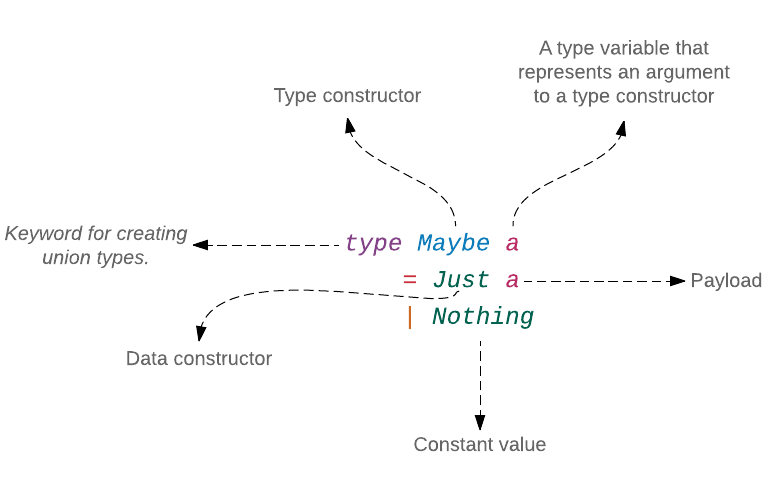
Generické (neboli parametrizované) typy jako Maybe a mohou být neuvěřitelně účinné. Všechno, co potřebujeme pro vytváření vlastních generických typů, je zadat argument typovému konstruktoru. Námi vytvořený typ Greeting není generickým typem.
type Greeting
= Howdy
| Hola
| Namaste String
| NumericalHi Int IntDatové konstruktory, které vytvoří hodnotu typu Greeting očekávají, že jejich payloady jsou určitého typu. Položka Namaste vyžaduje aby její payload byl typu String a NumericalHi vyžaduje dvě hodnoty typu Int. Upravte definici typu Greeting v souboru Playground.elm tak aby přijímal typový argument.
type Greeting a
= Howdy
| Hola
| Namaste a
| NumericalHi Int IntNyní, když můžeme zadávat typový argument do typu Greeting, není datový konstruktor Namaste omezen pouze na jeden typ. Přijímá payload libovolného typu. Předtím, než vyzkoušíme následující příklady, změňte text funkce sayHello včetně anotace jejího typu na komentář (proveďte její odznačení). Jinak obdržíte chybová hlášení. Tuto funkci upravíme později.
> Namaste 5
Namaste 5 : Playground.Greeting number
> Namaste "aaramai?"
Namaste "aaramai?" : Playground.Greeting String
> Namaste [ 1, 2, 3 ]
Namaste [1,2,3] : Playground.Greeting (List number)Signatura typu se rovněž změnila.
> Namaste
<function> : a -> Playground.Greeting aPřed přidáním typového argumentu to bylo takto:
> Namaste
<function> : String -> Playground.GreetingVšimněte si, že jsme typový argument a použili pouze u Namaste, nikoli u NumericalHi. Nechce se od nás, abychom zadávali typový argument všem datovým konstruktorům. Ve skutečnosti je dokonce nemusíme zadávat žádnému datovému konstruktoru. Následující definice typu je v Elmu zcela platná. Upravte definici typu Greeting následovně:
type Greeting a
= Howdy
| Hola
| Namaste String
| NumericalHi Int IntTypový argument, který není použit v žádnem z datových konstruktorů, je znám jako fantomový typový argument. Pro existenci fantomových typových argumentů jsou legitimní důvody ale jejich vysvětlení je mimo rámec této knihy.
Protože jsou Greeting a Greeting a dva rozdílné typy, potřebujeme upravit anotaci typu u funkce sayHello. Zrušte odznačení funkce sayHello a upravte anotaci jejího typu takto:
sayHello : Greeting a -> StringV definici funkce potřebujeme změnit pouze anotaci typu, nikoliv část sayHello greeting =, protože parametr greeting funkce jednoduše zahrnuje jakoukoli hodnotu typu Greeting a.
Jiný úhel pohledu dostaneme, změníme-li naši definici typu na type Welcome a. Potom musíme změnit anotaci typu na sayHello : Welcome a -> String,
ale můžeme přitom ponechat naši definici funkce ve tvaru sayHello greeting =. Anotace typu je agent, který spojuje hodnotu, uloženou v parametru funkce se správným typem, nikoliv se jménem parametru funkce, jímž může být cokoliv si přejeme. Než se posuneme dále, vraťme definici typu Greeting zpět na:
type Greeting a
= Howdy
| Hola
| Namaste a
| NumericalHi Int IntJediná věc která se změnila, je to že datový konstruktor Namaste vyžaduje aby jeho payload byl typu a místo String. Když nyní v replu zkusíme zadat sayHello, dostaneme následující chybové hlášení.
> sayHello
==================================== ERRORS ====================================
-------------------------------- TYPE MISMATCH ---------------------------------
The 2nd and 3rd branches of this `case` produce different types of values.
233| case greeting of
234| Howdy ->
235| "How y'all doin'?"
236|
237| Hola ->
238| "Muy bien, gracias."
239|
240| Namaste message ->
241|> message
242|
243| NumericalHi value1 value2 ->
244| value1 + value2 |> toString
The 2nd branch has this type:
String
But the 3rd is:
a
Hint: Your type annotation uses type variable `a` which means any type of value
can flow through. Your code is saying it CANNOT be anything though! Maybe change
your type annotation to be more specific? Maybe the code has a problem? More at:
<https://github.com/elm-lang/elm-compiler/blob/0.18.0/hints/type-annotations.md>
Hint: All branches in a `case` must have the same type. So no matter which one
we take, we always get back the same type of value.Podle této chybové zprávy musí všechny větve vyrazu case vracet hodnotu stejného typu, my se však tímto pravidlem neřídíme. Vrací se nám hodnota typu String pro Howdy, Hola a NumericalHi a hodnota libovolného typu (reprezentovaná členem a) pro Namaste. Funkce v Elmu musejí vracet hodnotu pouze jednoho typu. Proto potřebujeme aby všechny větve vracely buď hodnotu typu a nebo String. Vraťme ještě jednou definici funkce do předchozího tvaru abychom se zbavili chyby:
type Greeting a
= Howdy
| Hola
| Namaste String
| NumericalHi Int IntV této poslední podobě nepotřebuje typ Greeting žádný typový argument ale ponecháme jej tak, jak je. Pokud se vám nelíbí fantomové typové argumenty, směle jej smažte. Potom ale nezapomeňte také změnit anotaci typu pro funkci sayHello.
Víceré typové argumenty
Elm nám umožňuje míti víceré argumenty v definici typu. Zde je příklad:
type Result error value
= Ok value
| Err errorSejně jako Maybe, je Result další vestavěný typ v Elmu. Přijímá dva typové argumenty: error a value. Typ Result přijde vhod, když selže operace a my potřebujeme získat popis selhání v chybovém hlášení.
> String.toInt "1"
Ok 1 : Result.Result String Int
> String.toInt "a"
Err "could not convert string 'a' to an Int" : Result.Result String IntMísto aby se náš program zhroutil, vrací funkce toInt hodnotu z typu Result když ji zadáme neplatný vstup. Takto vypadá signatura typu funkce toInt:
toInt : String -> Result String IntAbychom vytvořili hodnotu typu Result, musíme použít jeden z těchto datových konstruktorů: Ok a Err.
> Ok 5
Ok 5 : Result.Result error number
> Ok "Inigo Montoya"
Ok "Inigo Montoya" : Result.Result error String
> Ok [ 1, 2, 3 ]
Ok [1,2,3] : Result.Result error (List number)
> Err "Operation failed because you entered invalid data."
Err "Operation failed because you entered invalid data."
: Result.Result String valueTypResult je poněkud expresivnější než Maybe. Místo získání pouhého Nothing můžeme vytvořit popisnou zprávu, která vysvětluje proč operace neuspěla. Přidejte následující funkci hned nad funkci main v souboru Playground.elm.
signUp : String -> String -> Result String String
signUp email age =
case String.toInt age of
Err message ->
Err message
Ok age ->
let
emailPattern =
Regex.regex "\\b[A-Za-z0-9._%+-]+@[A-Za-z0-9.-]+\\.[A-Za-z]{2,}\\b"
isValidEmail =
Regex.contains emailPattern email
in
if age < 13 then
Err "You need to be at least 13 years old to sign up."
else if isValidEmail then
Ok "Your account has been created successfully!"
else
Err "You entered an invalid email."Funkce signUp demonstruje, jak vytvořit a zacházet s hodnotami typu Result type. Přijímá jako vstup emailovou adresu a věk. Nejprve se pokouší konvertovat uživatelem zadaný věk z typu String na typ Int. Protože funkce String.toInt vrací hodnotu typu Result, potřebujeme použít výraz case, abychom podchytili scénář jak úspěchu, tak selhání. Je-li uživatel alespoň 13 roků stár a jeho emailová adresa je rovněž platná, vrátí se nám zpráva o úspěchu s označením Ok,
v opačném případě se vrátí příslušná chybová zpráva s označením Err.
> signUp "thedude@rubix.com" "48"
Ok "Your account has been created successfully!"
: Result.Result String String
> signUp "@sobchaksecurity.com" "51"
Err "You entered an invalid email."
: Result.Result String String
> signUp "walter@sobchaksecurity.com" "11"
Err "You need to be at least 13 years old to sign up."
: Result.Result String String
> signUp "bunny@jackietreehorn.com" "aa"
Err "could not convert string 'aa' to an Int"
: Result.Result String StringTypy Maybe a Result spolu s typem Task (o kterém pohovoříme v kapitole 5) poskytují robustní mechanizmus pro podchycení chyb při kompilaci. Z toho důvodu je velice vzácný výskyt chyby při běhu programu (runtime).
Typový vs datový konstruktor
V této chvíli se můžete ptát, kde přesně se typové a datové konstruktory používají. Typové konstruktory se používají hlavně v deklaracích nebo anotacích typu, zatímco datové konstruktory se používají uvnitř těla funkce nebo když definujeme konstantu nejvyšší úrovně.
Řekněme, že chceme zjistit, který ze sourozenců Starka ze seriálu Game of Thrones dosáhl dospělosti. Přidejte následující kód hned nad funkci main v souboru Playground.elm.
type alias Character =
{ name : String
, age : Maybe Int
}
sansa : Character
sansa =
{ name = "Sansa"
, age = Just 19
}
arya : Character
arya =
{ name = "Arya"
, age = Nothing
}
getAdultAge : Character -> Maybe Int
getAdultAge character =
case character.age of
Nothing ->
Nothing
Just age ->
if age >= 18 then
Just age
else
NothingDefinovali jsme záznam (record) zvaný Character, který obsahuje jméno a věk postavy.
that contains a character’s name and age. Konkretní typ Maybe Int je přiřazen k označení age, naznačující možnost, že postava nemusí prozradit svůj věk. Potom jsme vytvořili postavu sansa a postavu arya. Věk postavy sansa je v záznamu uveden jako Just 19 ale věk postavy arya je veden jako Nothing, což znamená, že její věk není znám.
V probíraném příkladu jsme tedy narazili na jeden typový konstruktor (Maybe) a dva datové konstruktory (Just a Nothing). Konstruktor Nothing je víceméně konstanta ale my jej zde považujeme za nulární datový konstruktor. Protože je Character alias typu, není považován za skutečný typ. Jak vidíme, je typový konstruktor Maybe v záznamu použit jako deklarace typu.
type alias Character =
{ name : String
, age : Maybe Int
}I když Character není skutečný typ, záznam { name : String, age : Maybe Int } jím je. Alias typu se obvykle vyskytuje spolu s typovým konstruktorem. Při vytváření skutečného záznamu, potřebujeme místo typového konstruktoru Maybe použít datový konstruktor Just nebo Nothing.
sansa : Character
sansa =
{ name = "Sansa"
, age = Just 19
}
arya : Character
arya =
{ name = "Arya"
, age = Nothing
}Typový konstruktor Maybe se také vyskytuje v anotaci typu funkce getAdultAge.
getAdultAge : Character -> Maybe IntDatové konstruktory Just a Nothing jsou použity uvnitř těla funkce pro vytvoření skutečných hodot typu Maybe Int. Jsou rovněž použity ve výrazu 'case' ke hledání shody vzoru s hodnotami uvnitř parametru character.age.
getAdultAge character =
case character.age of
Nothing ->
Nothing
Just age ->
if age >= 18 then
Just age
else
NothingPopatřme, jak se zachová funkce getAdultAge, zadáme-li ji postavu s deklarovaným věkem.
> getAdultAge sansa
Just 19 : Maybe.Maybe IntV replu se nám datový konstruktor zobrazuje v obasti hodnoty, zatímco typový konstruktor se vyskytuje v oblasti anotace typu.
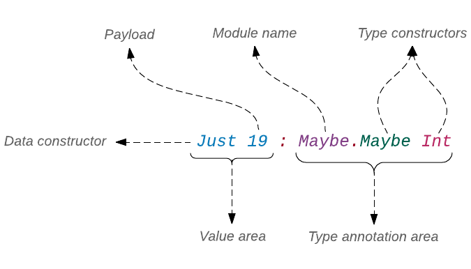
A což postava bez určeného věku?
> getAdultAge arya
Nothing : Maybe.Maybe IntPodle očekávání jsme dostali Nothing. Vytvořme v replu tři další postavy, abychom více prozkoumali chování funkce getAdultAge.
> jonSnow = Character "Jon Snow" (Just 21)
{ name = "Jon Snow", age = Just 21 } : Playground.Character
> rickon = Character "Rickon" (Just 11)
{ name = "Rickon", age = Just 11 } : Playground.Character
> robb = Character "Robb" (Just 18)
{ name = "Robb", age = Just 18 } : Playground.CharacterCo se stane, když funkci getAdultAge zadáme postavu s věkem menším než18?
> getAdultAge rickon
Nothing : Maybe.Maybe IntMísto skutečného věku vrací funkce getAdultAge hodnotu Nothing, protože je navržena aby ignorovala věk nedospělých postav. Můžeme to využít k husarskému kousku: vytisknout věk pouze dospělých postav.
> List.filterMap getAdultAge [ sansa, arya, jonSnow, rickon, robb ]
[19,21,18] : List IntV Elmu můžeme usoudit chování funkce podle její anotace typu. Vyzkoušejme si to. Zadáme v replu List.filterMap a hle co dostáváme:
> List.filterMap
<function> : (a -> Maybe.Maybe b) -> List a -> List bAnotace typu nám říká, že funkce filterMap příjímá dva argumenty:
-
Funkci, která indikuje, zda je či není určitá operace úspěšná pro daný vstup. Je-li úspěšná, vrací hodnotu zabalenou v
Just, jinak vracíNothing. -
Seznam hodnot typu
a.
Konečně, funkce filterMap vrací seznam hodnot typu b. Ve většině případů však anotace typu nestačí pro představu o práci funkce. Na příklad, jedním z projevů funkce filterMap, nikoliv zřejmých z anotace typu je to, že funkce zavrhne všechy prvky původního seznamu, u kterých funkce getAdultAge vrací hodnoty Nothing. Vybírá potom hodnoty ze zbylých prvků Just a vkládá je do nového seznamu.
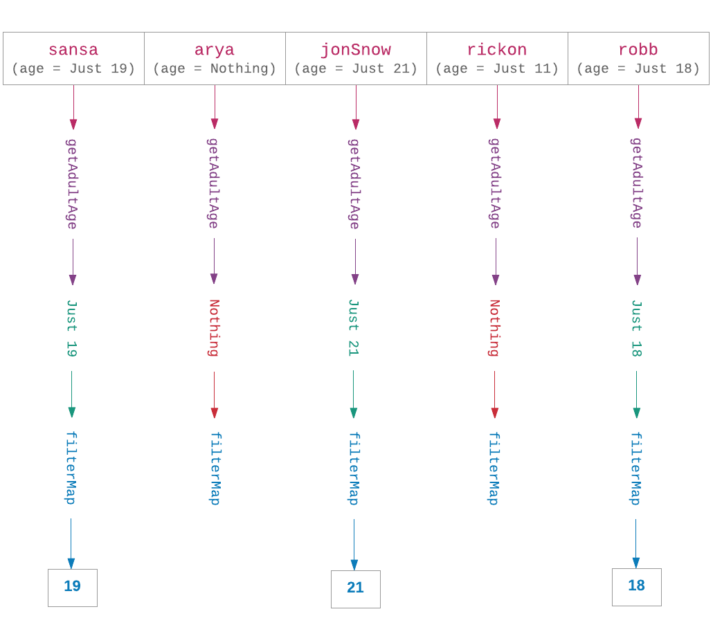
Rekurzivní typy
V sekci Jak je seznam implementován jsme si říkali, že typ Listje definován jako rekurzivní typ. V oné chvíli jsme toho o typech mnoho nevěděli, abychom byli schopni plně pochopit ideu rekurzivních typů. Nyní, když víme, co typy jsou, jsme v jiné situaci. Mějme seznam čísel [ 16, 5, 31, 9 ]. Za scénou je tento seznam (list) konstruován takto:
> []
[] : List a
> 9 :: []
[9] : List number
> 31 :: [ 9 ]
[31,9] : List number
> 5 :: [ 31, 9 ]
[5,31,9] : List number
> 16 :: [ 5, 31, 9 ]
[16,5,31,9] : List numberZačali jsme prázdným seznamem a přidali jsme k němu 9 s použitím operátoru cons (::). Poté jsme pokračovali v postupném přidávání zbývajících elementů. V takovéto konstrukci můžeme vidět rekurzivní strukturu, vlastní všem seznamům:

Z obrázku je patrné, že se seznam skládá z nodů, které samy o sobě jsou seznamy. To je to, co činí typ List typem rekurzivním. Vytvořme vlastní datovou strukturu, velice podobnou typu List, abychom lépe porozuměli, jak rekurzivní datové struktury pracují. Přidejte následující definici typu hned nad funkci main v souboru Playground.elm.
type MyList a
= Empty
| Node a (MyList a)
main =
...Výše uvedená definice znamená, že seznam typu MyList může být buď Empty (prázdný) nebo obsahovat Node a, následovaný dalším seznamem (MyList a). Seznam se žádnými elementy lze reprezentovat takto: Empty. Seznam s jediným elementem je prezentován takto: Node a Empty. Podobně seznam se dvěma elementy je representován takto: (Node a (Node a Empty)), a tak dále. Nyní s pomocí naší definice vytvořme seznam [ 16, 5, 31, 9 ].
> Empty
Empty : Playground.MyList a
> Node 9 Empty
Node 9 Empty : Playground.MyList numberZačínáme prázdným seznamem a potom přidáváme číslo 9 podobně, jako když jsme tvořili seznam pomocí operátoru cons (::): 9 :: []. Dále pokračujeme v přidávání zbývajících prvků do čela stávajícího seznamu.
> Node 31 (Node 9 Empty)
Node 31 (Node 9 Empty) : Playground.MyList number
> Node 5 (Node 31 (Node 9 Empty))
Node 5 (Node 31 (Node 9 Empty)) : Playground.MyList number
> Node 16 (Node 5 (Node 31 (Node 9 Empty)))
Node 16 (Node 5 (Node 31 (Node 9 Empty))) : Playground.MyList number
Náš seznam zajisté není tak úhledný jako ten, který poskytuje Elm ale koncepčně jsou stejné. I když se náš typ MyList chová podobně jako typ List, nemůžeme použít žádnou z funkcí, definovaných v modulu List. MyList a List jsou dva zcela odlišné typy. V sekci Snadnější organizace kódu použijeme jednu z funkcí z modulu List tak, aby pracovala rovněž s typemMyList.
Je důležité poznamenat, že pokud rekurzivní typ neposkytuje alespoň jeden nulární datový konstruktor, potom skončíme s hodnotou, která nikdy nekončí. Odstraníme-li datový konstruktor Empty z typu MyList:
type MyList a
= Node a (MyList a)skončíme s takovouto hodnotou:
Node 16 (Node 5 (Node 31 (Node 9 (Node 18 (Node 7 (Node 26 (...)))))))... reprezentuje nekonečnou iteraci hodnoty Node a.
Práce s rekurzivními typy
Rekurzivní typy můžeme používat stejným způsobem jako každý jiný sdružený (unit) typ. Výraz case se používá k vyhledání shody (pattern match) s každým jednotlivým datovým konstruktorem, v typu definovaném. Přidejte následující definici funkce nad funkci main v souboru Playground.elm
sum : MyList Int -> Int
sum myList =
case myList of
Empty ->
0
Node intValue remainingNodes ->
intValue + sum remainingNodessum je funkce, která počítá součet celočíselných hodnot, obsažených v typu MyList. Potřebujeme řešit jenom dva případy (Empty a Node), protože to jsou jediné datové konstrukory, které typ MyList nabízí. Není-li seznam prázdný, odebereme celé číslo z čela a rekurzivně aplikujeme funkci sum na zbytek seznamu. Použití funce sum v replu:
> import Playground exposing (..)
> myList = Node 1 (Node 2 (Node 3 (Node 4 Empty)))
Node 1 (Node 2 (Node 3 (Node 4 Empty))) : Playground.MyList number
> sum myList
10 : IntObrázek dole ukazuje každý jednotlivý krok při vyhodnocení výrazu sum myList.
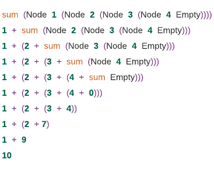
Rekrzivní typy jsou velmi účinné. Dovolují nám stručně definovat složité datové struktury. S pomocí rekurzivního typu zaveďme další datovou strukturu, zvanou binární strom. Vysvětlení vnitřního uspořádání binárního stromu je mimo rámec této knihy. Takže se omezíme na jeho definici a vizuální zobrazení.
type Tree a
= Empty
| Node a (Tree a) (Tree a)Jméno Tree reprezentuje binární strom - hierarchickou stromovou strukturu, ve které každý node může mít nejvíce dvě děti. V programování má mnohé upotřebení.
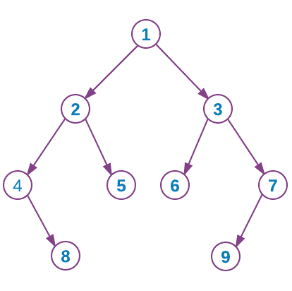
Strom z obrázku nahoře může být programově vyjádřen takto:
exampleTree : Tree Int
exampleTree =
Node '1'
(Node '2'
(Node '4'
Empty
(Node '8' Empty Empty)
)
(Node '5' Empty Empty)
)
(Node '3'
(Node '6' Empty Empty)
(Node '7'
(Node '9' Empty Empty)
Empty
)
)Přidáte-li funkci exampleTree definici typu Tree do souboru Playground.elm, dostanete chybu duplikátní definice, protože datový konstruktor Node je použit v typech MyList a Tree, což není dovoleno. Výše uvedený příklad je zamýšlen jako ukázka vytvoření stromu s použitím definice rekurzivního typu. Nemusíte jej tedy realizovat.
Jak účinný je vlastně typový systém Elmu?
Jak účinný je typový systém Elmu v porovnání s jinými jazyky? Existuje mnoho velkých jazyků ale my se v našem srovnávání omezíme jenom tyto tři: Idris, Haskell a JavaScript. Typové systémy těchto jazyků mají několik zajímavých vlastností výrazně odlišných od Elmu. Pro tuto ukázku použijeme jednoduchou funkci, která sčítá dvě hodnoty.
Ve zbytku této sekce si prezentovaný kód zkoušet nemusíte. Pohodlně se usaďte a pozorně čtěte.
function add (x, y) {
return x + y
}Výše uvedená funkce je napsaná v JavaScriptu. Při pohledu na definici nedokážeme říci, jaké typy hodnot funkce add akceptuje. Po jistém zkoušení zjistíme, že akceptuje skoro každý typ hodnoty:
> add(1, 2)
3
> add(2.5, 4.3)
6.8
> add('a', 'b')
"ab"
> add("romeo", "juliet")
"romeojuliet"JavaScript je dynamicky typovaný jazyk, což znamená, že neprověřuje typy hodnot před během programu. Typy parametrů x a y nejsou známé, dokud nezadáme konkrétní hodnoty funkci add při její exekucí. Jak vidno z ukázek, umí sečíst dvě celá čísla, desetinná čísla, znaky a dokonce řetězce.
Napišme funkce add v Elmu.
add : number -> number -> number
add x y =
x + yTypový systém Elmu nám umožńuje přesně určit typy vstupních i výstupních hodnot. V anotaci typu nahoře říkáme, že funkce add přijímá dvě hodnoty typu number a vrací hodnotu stejného typu. Jak jsme si již dříve říkali, typová proměnná 'number' zastupuje typy Int a Float. Zadáme-li hodnoty jakéhokoli jiného typu, neprojde náš program ani kompilací. Elm je staticky typovaný jazyk, což znamená, že při kompilaci ověřuje typy hodnot.
> add 1 2
3 : number
> add 2.5 4.3
6.8 : FloatNyní napíšeme funkci add v Haskellu.
add :: Num a => a -> a -> a
add x y =
x + yTělo funkce add v Haskellu i Elmu je úplně stejné, protože syntaxe Elmu je úzce odvozená z Haskellu. Typový systém Haskellu nám rovněž umožňuje přesně určit typy hodnot pro naše funkce ale je diferencovanější než v Elmu. V Haskellu můžeme formálně říci, že funkce add akceptuje jakýkoli typ čísel, nejenom Int a Float. Tato "bezbřehost" je ovšem jenom zdánlivá.
Jedním z důvodů, proč je typový systém v Haskellu expresivnější, jsou jeho typové třídy, které umožňují seskupovat typy podle společných vlastností.
Int, Integral, Float, a Double jsou v Haskellu různé typy, mající společné vlastnosti, jež z nich činí jeden skupinový typ (třídu) Num. Podporované operace třídy Num zjistíme dotazem:
> :info Num
class Num a where
(+) :: a -> a -> a
(-) :: a -> a -> a
(*) :: a -> a -> a
negate :: a -> a
abs :: a -> a
signum :: a -> a
fromInteger :: Integer -> aZdvojená dvojtečka :: je totéž jako dvojtečka : v Elmu. Znamená "je typu". Jak vidno, operátor + přináleží ke třídě Num. To znamená, že naše funkce add může pracovat s každým typem, který je členem třídy Num. Proto se v anotaci typu funkce add uvádí Num.
add :: Num a => a -> a -> aText mezi zdvojenou dvojtečkou :: a zdvojenou šipkou => je vymezení typové třídy. Num je typová třída a Num a je vymezení této třídy pro typovou proměnnou a. Porovnejme anotaci typu v Haskellu s anotací v Elmu:
add : number -> number -> numberAnotace typu v Elmu je mnohem restriktivnější, než v Haskellu. Nyní vás může napadnout, že number v Elmu je jako typová třída v Haskellu - umožňuje nám říci, že funkce add přijímá hodnoty typu number, neboli hodnoty typu Int a Float. Jde však o podobnost čistě náhodnou. Termín number je v Elmu veden jako specielní typová proměnná, jež může zastupovat typyInt a Float.
Návrháři Elmu se rozhodli nezahrnout typové třídy do jazyka z různých důvodů - viz tato stránka na Github.
Na závěr napíšeme funkci add v Idrisu.
add : (x : Nat) -> (y : Nat) -> {auto smaller : LT x y} -> Nat
add x y =
x + yTělo funkce add je v Idrisu rovněž stejné jako v Elmu a Haskellu. To proto, že syntaxe Idrisu je rovněž úzce odvozena z Haskellu. Anotace typu je však zcela odlišná. Říká, že funkce add akceptuje dvě celá čísla a vrací celé číslo ale že navíc první argument musí být menší než druhý argument.
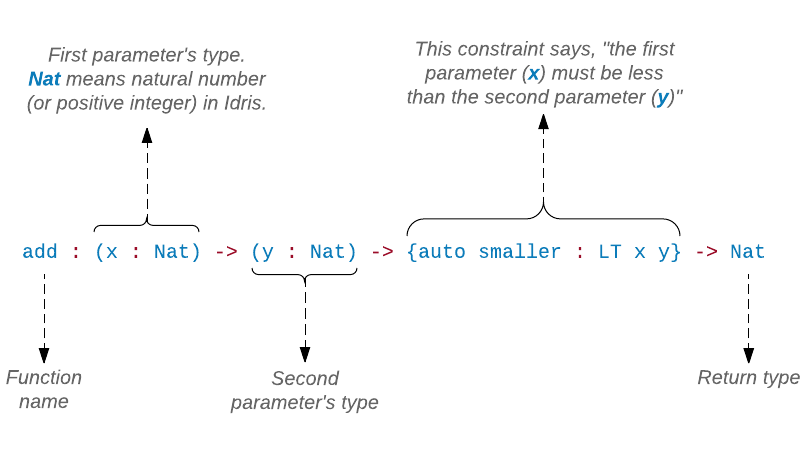
Kompilátor Idrisu zajistí, že funkce add není nikdy aplikována na dva argumenty, z nichž první je větší než druhý. Toto vymezení je možné proto, že Idris podporuje dependent types, což jsou typy, jejichž definice je závislá na jejich hodnotě. Toto omezení prostřednictvím typů umožňuje jen velmi málo jazyků. Ani Haskell tuto schopnost nemá. V Haskellu lze tuto podmínku ověřit pouze při běhu programu takto:
add x y =
if x < y then
x + y
else
error "First argument must be smaller than the second argument."Abychom to shrnuli, typový systém Elmu nám umožňuje určit více omezujících podmínek než typový systém v JavaScriptu a typový systém v Haskellu umožňuje určít více typových vymezení než typový systém Elmu. Typový systém Idrisu umožňuje určít ještě více omezujících podmínek než dtto Haskellu. Čím více podmínek můžeme určit pro kompilaci, tím je menší možnost, že se vyskytne chyba při běhu programu.
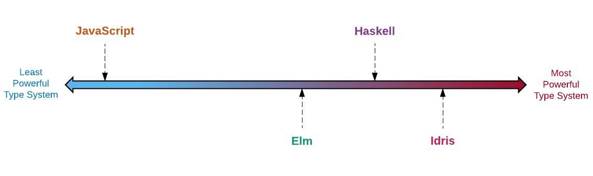
Z toho plyne otázka - je-li Idris nejefektivnější v prevenci chyb, proč návrháři Elmu rovněž nepoužili tento systém? Důvodem je složitost. Čím je typový systém mocnější, tím je náročnější jej zavést. Také se obtížněji osvojuje. Jedním z typických znaků Elmu je to, že je snadný na učení. K tomu příspívá i to, že nemá příliš složitý typový systém.